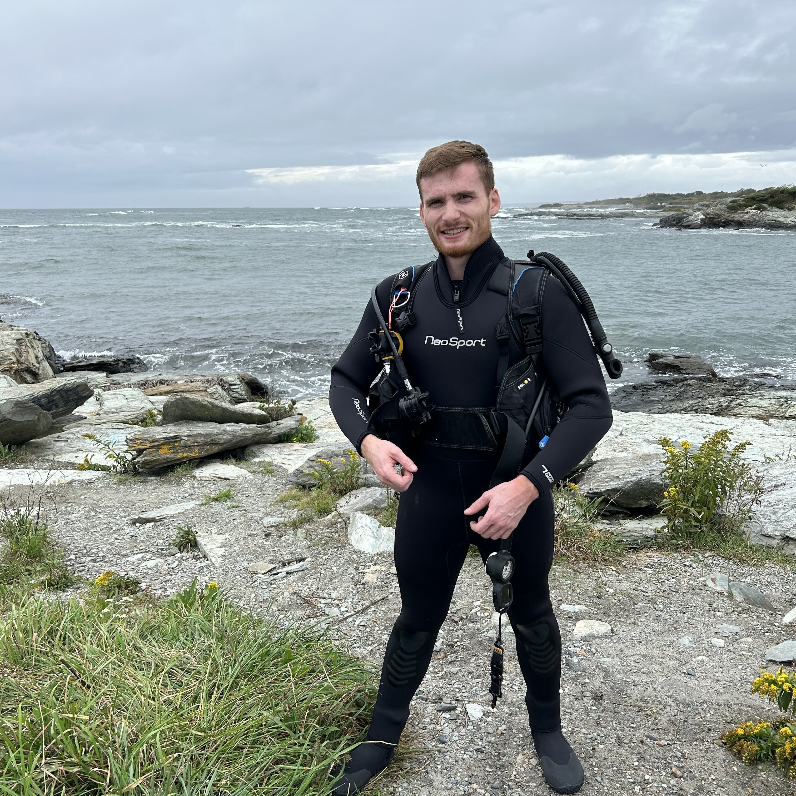

Colin Nash

Summary
I am a senior research associate in biotechnology with an interest in learning to code.
Work Experience
Beantown Biotech | Billerica, MA
Research associate
- Lead cell-based screening operations using luciferase-based detection methods for protein expression and cell viability
- Developed a lead compound screening assay using MST for the identification of hits from a library of fragment compounds
Education
- Wentworth Institute of Technology | Boston, MA
Skills
- Lab Techniques: Luciferase assays (HiBiT, Viability), MST, MSD, JESS, ELISA, mammalian cell culture, flow cytometry
- Software: GraphPad Prism, JUMP, SnapGene, Microsoft Office
Other
About Me
Contact Info